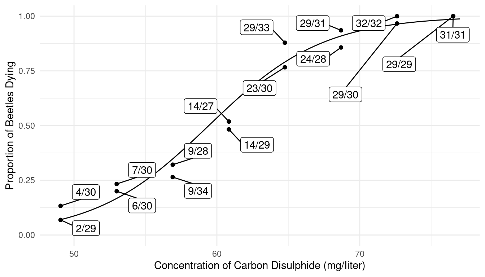
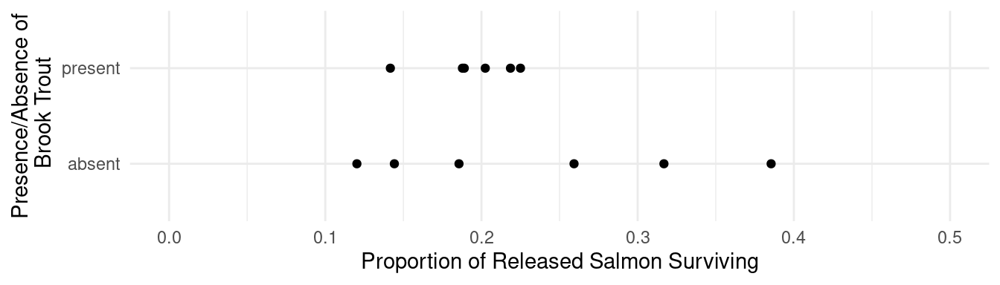
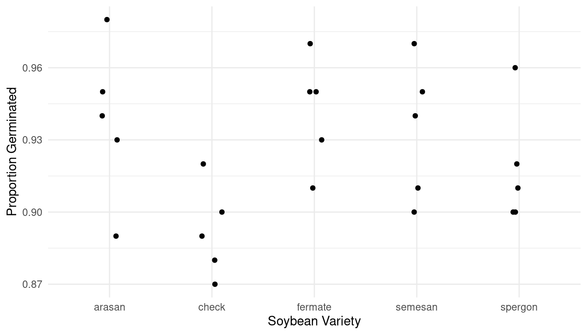

Monday, Mar 4
You can also download a PDF copy of this lecture.
Proportions as Response Variables
Consider the following data from an experiment that exposed batches of beetles to carbon disulphide.
library(trtools)
library(ggplot2)
library(ggrepel)
bliss$proportion <- paste(bliss$dead, "/", bliss$exposed, sep = "")
bliss concentration dead exposed proportion
1 49.06 2 29 2/29
2 49.06 4 30 4/30
3 52.99 7 30 7/30
4 52.99 6 30 6/30
5 56.91 9 28 9/28
6 56.91 9 34 9/34
7 60.84 14 27 14/27
8 60.84 14 29 14/29
9 64.76 23 30 23/30
10 64.76 29 33 29/33
11 68.69 29 31 29/31
12 68.69 24 28 24/28
13 72.61 29 30 29/30
14 72.61 32 32 32/32
15 76.54 29 29 29/29
16 76.54 31 31 31/31p <- ggplot(bliss, aes(x = concentration, y = dead/exposed)) +
geom_point() + ylim(0, 1) + theme_minimal() +
geom_label_repel(aes(label = proportion), box.padding = 0.75) +
labs(x = "Concentration of Carbon Disulphide (mg/liter)",
y = "Proportion of Beetles Dying")
plot(p)The interest here is in modeling the proportion of dead beetles as a response variable.
A proportion \(Y_i\) can be defined as \(Y_i = C_i/m_i\) where \(C_i\) is a count and \(m_i\) is a total so that \(C_i = 0, 1, \dots, m_i\) and \(Y_i = 0, 1/m_i, 2/m_i, \dots, 1\). Note that proportions are not quite the same as rates. Proportions are bounded between zero and one, but rates are only bounded below by zero.
Proportions may require nonlinear models because \(0 \le E(Y_i) \le 1\).
Proportions tend to exhibit heteroscedasticty with variance depending on \(E(Y_i)\) and \(m_i\). The variance of \(Y_i\) tends to be smaller as \(E(Y_i)\) gets closer to zero or one, and is inversely proportional to \(m_i\).
Non-normal discrete distribution.
The Binomial Distribution
Assume \(m\) independent “trials” with a probability of a “success” on each trial of \(p\) (and thus the probability of a “failure” is \(1-p\)). The number of successes then has a binomial distribution such that \[ P(C = c) = \binom{m}{c}p^c(1-p)^{m-c} \] where \[ \binom{m}{c} = \frac{m!}{c!(m-c)!}. \] The possible values of \(C\) are \(0, 1, \dots, m\). Note that \(\binom{m}{c}\) is the number of outcomes where we can have a count of \(c\) out of \(m\), and \(p^c(1-p)^{m-c}\) is the probability of each of these outcomes.
Example: Suppose that the probability of observing a seed germinate under certain conditions is 0.2, and we observe four seeds. Let \(C\) be the number of seeds that germinate. Then \(m\) = 4 and \(p\) = 0.2. The probability that, say, \(C\) = 3 is then \[ P(C = 3) = \underbrace{\frac{4!}{3!(4-3)!}}_{4}\underbrace{0.2^3(1-0.2)^{4-3}}_{0.0064} = 0.0246. \] There are four outcomes that give three successes, and each of these outcomes has a probability of 0.0064.| Outcome | Probability |
|---|---|
| SSSF | \(0.2 \times 0.2 \times 0.2 \times 0.8\) |
| SSFS | \(0.2 \times 0.2 \times 0.2 \times 0.8\) |
| SFSS | \(0.2 \times 0.2 \times 0.2 \times 0.8\) |
| FSSS | \(0.2 \times 0.2 \times 0.2 \times 0.8\) |
The proportion is obtained as \(Y = C/m\).
The figures below show several binomial distributions for different values of \(m\) and \(p\). The figures below show the distributions of the proportion \(C/m\). It can be shown that \[ E(C) = mp \ \ \ \text{and} \ \ \ \text{Var}(C) = mp(1-p). \] Then for the proportion \(Y = C/m\) it follows that \[ E(Y) = p \ \ \ \text{and} \ \ \ \text{Var}(Y) = p(1-p)/m. \] This is because \(E(Y) = E(C/m) = E(C)/m = mp/m = p\) and \(\text{Var}(Y) = \text{Var}(C/m) = \text{Var}(C)/m^2 = mp(1-p)/m^2 = p(1-p)/m\). Note that the variance is at its maximum when \(p\) = 0.5 and gets smaller as \(p\) moves away from 0.5 toward \(p\) = 0 or \(p\) = 1. An important special case of the binomial distribution is the Bernoulli distribution where \(m = 1\) so that \(C = 0,1\) and \(Y = 0,1\).
Binomial Generalized Linear Models
Assume that each \(C_1, C_2, \dots, C_n\) has a binomial distribution with parameters \(p_1, p_2, \dots, p_n\) and \(m_1, m_2, \dots, m_n\), respectively, but \(m_1, m_2, \dots, m_n\) are observed/known). A binomial GLM will then specify the expected value of \(Y_i = C_i/m_i\) as \[ g[E(Y_i)] = \eta_i \ \ \ \text{or} \ \ \ E(Y_i) = g^{-1}(\eta_i), \] where \(\eta_i = \beta_0 + \beta_1 x_{i1} + \beta_2 x_{i2} + \cdots + \beta_k x_{ik}\).
Recall that \(E(Y_i) = p_i\) so we are effectively specifying a model for the probability of a success. The variance of \(Y_i\) is then \[ \text{Var}(Y_i) = E(Y_i)[1-E(Y_i)]/m_i = p_i(1-p_i)/m_i, \] so that \(0 \le \text{Var}(Y_i) \le 0.25m_i\). Like rates, it is preferable to not model proportions as response variables without accounting for the denominator \(m_i\) since it affects the variance.
Logistic Regression
Logistic regression is a binomial generalized linear model that uses a “logit” link function such that \[ g[E(Y_i)] = \log\left[\frac{E(Y_i)}{1-E(Y_i)}\right] = \log\left(\frac{p_i}{1-p_i}\right), \] and therefore \[ E(Y_i) = \frac{e^{\eta_i}}{1+e^{\eta_i}} \ \ \ \text{or} \ \ \ p_i = \frac{e^{\eta_i}}{1+e^{\eta_i}}, \] where again \(\eta_i = \beta_0 + \beta_1 x_{i1} + \beta_2 x_{i2} + \cdots + \beta_k x_{ik}\). Note that this guarantees that \(0 < E(Y_i) < 1\).
Example: Consider again the bliss data.
The glm function can be used to estimate the logistic
regression model where \[
E(Y_i) = \frac{e^{\eta_i}}{1 + e^{\eta_i}},
\] where \(\eta_i = \beta_0 + \beta_1
x_i\) and \(x_i\) is the
concentration for the \(i\)-th
observation (i.e., the \(i\)-th batch
of beetles).
m <- glm(cbind(dead, exposed - dead) ~ concentration,
family = binomial(link = logit), data = bliss)
cbind(summary(m)$coefficients, confint(m)) Estimate Std. Error z value Pr(>|z|) 2.5 % 97.5 %
(Intercept) -14.8084 1.28976 -11.48 1.633e-30 -17.4785 -12.4089
concentration 0.2492 0.02138 11.65 2.250e-31 0.2095 0.2935Here the two variables in cbind are the number of
times the event occurred (i.e., \(C_i\)) and the number of times the
event did not occur (i.e., \(m_i-C_i\)). If the variables had been
dead and alive, representing the number of
dead and alive beetles, respectively, then we’d write
cbind(dead, alive). Also for family = binomial
the logit link function is the default so you can use
family = binomial for logistic regression.
d <- data.frame(concentration = seq(49, 77, length = 1000))
d$yhat <- predict(m, newdata = d, type = "response")
p <- ggplot(bliss, aes(x = concentration, y = dead/exposed)) +
geom_point() + ylim(0, 1) + theme_minimal() +
geom_line(aes(y = yhat), data = d) +
geom_label_repel(aes(label = proportion), box.padding = 0.75) +
labs(x = "Concentration of Carbon Disulphide (mg/liter)",
y = "Proportion of Beetles Dying")
plot(p)
Predicted probabilities, with confidence intervals, can also be obtained
using contrast or glmint. Note that the
function \(e^x/(1+e^x)\) is known to R
as plogis.
trtools::contrast(m, list(concentration = c(50,60,70)),
cnames = c("50 mg/liter","60 mg/liter","70 mg/liter"), tf = plogis) estimate lower upper
50 mg/liter 0.08707 0.05512 0.1349
60 mg/liter 0.53539 0.47121 0.5984
70 mg/liter 0.93299 0.89490 0.9579trtools::glmint(m, newdata = data.frame(concentration = c(50,60,70))) fit low upp
1 0.08707 0.05512 0.1349
2 0.53539 0.47121 0.5984
3 0.93299 0.89490 0.9579d <- data.frame(concentration = seq(49, 77, length = 1000))
d <- cbind(d, trtools::glmint(m, newdata = d))
head(d) concentration fit low upp
1 49.00 0.06920 0.04201 0.1119
2 49.03 0.06965 0.04233 0.1125
3 49.06 0.07010 0.04266 0.1131
4 49.08 0.07056 0.04299 0.1137
5 49.11 0.07102 0.04332 0.1143
6 49.14 0.07148 0.04365 0.1149p <- ggplot(bliss, aes(x = concentration, y = dead/exposed)) +
geom_point() + ylim(0, 1) + theme_minimal() +
geom_line(aes(y = fit), data = d) +
geom_line(aes(y = low), data = d, color = grey(0.75)) +
geom_line(aes(y = upp), data = d, color = grey(0.75)) +
geom_label_repel(aes(label = proportion), box.padding = 0.75) +
labs(x = "Concentration of Carbon Disulphide (mg/liter)",
y = "Proportion of Beetles Dying")
plot(p)Parameter and Contrast Interpretation: Odds Ratios
A logistic regression model can be written as \[ \frac{p_i}{1-p_i} = \exp(\beta_0 + \beta_1 x_{i1} + \beta_2 x_{i2} + \cdots + \beta_k x_{ik}) \] where \(p_i/(1-p_i)\) is the odds of the event. The odds is simply the ratio of the probability of the event occurring (\(p_i\)) to the probability of the event not occurring (\(1-p_i\)).
Odds are sometimes stated in “fractional form” as two numbers separated by a colon or other character (e.g., an odds of 1.5 might be written as “3:2” or “three to two”). Note that in its fractional form the odds \(a:b\) implies a probability of \(a/(a+b)\).| Probability | Numeric | Fractional |
|---|---|---|
| 0.01 | 0.01 | 1:99 |
| 0.1 | 0.11 | 1:9 |
| 0.25 | 0.33 | 1:3 |
| 1/3 | 0.50 | 1:2 |
| 0.4 | 0.67 | 2:3 |
| 0.5 | 1.00 | 1:1 |
| 0.6 | 1.50 | 3:2 |
| 2/3 | 2.00 | 2:1 |
| 0.75 | 3.00 | 3:1 |
| 0.9 | 9.00 | 9:1 |
| 0.99 | 99.00 | 99:1 |
It is important to note that probabilities and odds are related but
not equal.
 Let \(O_i\) be the odds for the \(i\)-th observation. Then \(O_i = p_i/(1-p_i)\) and \(p_i = O_i/(1 + O_i)\). Note that \(0 \le p_i \le 1\) but \(0 \le O_i \le \infty\).
Let \(O_i\) be the odds for the \(i\)-th observation. Then \(O_i = p_i/(1-p_i)\) and \(p_i = O_i/(1 + O_i)\). Note that \(0 \le p_i \le 1\) but \(0 \le O_i \le \infty\).
We can write a logistic regression model in terms of the
odds of an event as \[
O_i = \exp(\beta_0 + \beta_1 x_{i1} + \beta_2 x_{i2} + \cdots +
\beta_k x_{ik}),
\] or \[
O_i = e^{\beta_0}e^{\beta_1x_{i1}}e^{\beta_2x_{i2}}\cdots
e^{\beta_kx_{ik}}.
\] Here we can use contrast to make inferences about
the odds of death.
trtools::contrast(m, list(concentration = c(50,60,70)),
cnames = c("50 mg/liter","60 mg/liter","70 mg/liter"), tf = exp) estimate lower upper
50 mg/liter 0.09538 0.05833 0.1559
60 mg/liter 1.15232 0.89110 1.4901
70 mg/liter 13.92222 8.51430 22.7650We can even plot the estimated odds of death.
d <- data.frame(concentration = seq(49, 77, length = 1000))
d$yhat <- predict(m, newdata = d, type = "response")
d$odds <- d$yhat / (1 - d$yhat)
p <- ggplot(d, aes(x = concentration, y = odds)) +
geom_line() + theme_minimal() +
labs(x = "Concentration of Carbon Disulphide (mg/liter)",
y = "Odds of Beetles Dying")
plot(p)The model for the odds is “log-linear” like the model for expected counts in Poisson regression. To interpret the parameters of a logistic regression model, we can use odds ratios which are similar to rate ratios in Poisson regression.
Odds Ratio: Quantitative Explanatory Variable
Suppose we have the logistic regression model \[ O_i = \exp(\beta_0 + \beta_1 x) = e^{\beta_0}e^{\beta_1x}, \] were \(x_i\) is a quantitative explanatory variable. Consider the odds at \(x\) and \(x+1\) for arbitrary \(x\), \[ O_a = e^{\beta_0}e^{\beta_1(x+1)} \ \ \ \text{and} \ \ \ O_b = e^{\beta_0}e^{\beta_1x}. \] Then the odds ratio is \[ \frac{O_a}{O_b} = \frac{e^{\beta_0}e^{\beta_1(x+1)}}{e^{\beta_0}e^{\beta_1x}} = \frac{e^{\beta_0}e^{\beta_1x}e^{\beta_1}}{e^{\beta_0}e^{\beta_1x}} = e^{\beta_1} \Leftrightarrow O_a = O_be^{\beta_1}, \] so that an increase \(x\) by one unit changes the odds by a factor of \(e^{\beta_1}\). Also, we can compute the percent change in the odds as \[ 100\% \times [O_a/O_b - 1], \] where \(O_a/O_b = e^{\beta_1}\) is the odds ratio. Again, the sign tells us if this is a percent increase or decrease in the odds.
Example: Consider again the model for the
bliss data.
cbind(summary(m)$coefficients, confint(m)) Estimate Std. Error z value Pr(>|z|) 2.5 % 97.5 %
(Intercept) -14.8084 1.28976 -11.48 1.633e-30 -17.4785 -12.4089
concentration 0.2492 0.02138 11.65 2.250e-31 0.2095 0.2935exp(cbind(coef(m), confint(m))) 2.5 % 97.5 %
(Intercept) 3.705e-07 2.566e-08 4.082e-06
concentration 1.283e+00 1.233e+00 1.341e+00trtools::contrast(m, tf = exp,
a = list(concentration = 2),
b = list(concentration = 1)) estimate lower upper
1.283 1.23 1.338An odds ratio is then simply the ratio of the odds at two different values of an explanatory variable. We could compute the odds ratio, for example, for an increase of 1, 5, 10, and 20 mg/liter.
trtools::contrast(m, tf = exp,
a = list(concentration = c(1,5,10,20)),
b = list(concentration = 0),
cnames = c("+1 mg/liter", "+5 mg/liter", "+10 mg/liter", "+20 mg/liter")) estimate lower upper
+1 mg/liter 1.283 1.230 1.338
+5 mg/liter 3.476 2.819 4.286
+10 mg/liter 12.082 7.945 18.372
+20 mg/liter 145.971 63.126 337.540Suppose that we model instead the probability of survival rather than death.
m <- glm(cbind(exposed - dead, dead) ~ concentration,
family = binomial, data = bliss)
cbind(summary(m)$coefficients, confint(m)) Estimate Std. Error z value Pr(>|z|) 2.5 % 97.5 %
(Intercept) 14.8084 1.28976 11.48 1.633e-30 12.4089 17.4785
concentration -0.2492 0.02138 -11.65 2.250e-31 -0.2935 -0.2095exp(cbind(coef(m), confint(m))) 2.5 % 97.5 %
(Intercept) 2.699e+06 2.450e+05 3.898e+07
concentration 7.794e-01 7.456e-01 8.110e-01trtools::contrast(m, tf = exp,
a = list(concentration = 2),
b = list(concentration = 1)) estimate lower upper
0.7794 0.7475 0.8128Note the “symmetry” of logistic regression. Whether we model the probability of the event or its complement is just a matter of parameterization.
Odds Ratio: Categorical Explanatory Variable
Suppose we have the model \[ O_i = \exp(\beta_0 + \beta_1 x) = e^{\beta_0}e^{\beta_1x}, \] were \(x\) is an indicator variable so that \[ x = \begin{cases} 1, & \text{if the observation is from group $a$}, \\ 0, & \text{if the observation is from group $b$}, \end{cases} \] so that the model can be written as \[ O_i = \begin{cases} e^{\beta_0}e^{\beta_1}, & \text{if the observation is from group $a$}, \\ e^{\beta_0}, & \text{if the observation is from group $b$}. \end{cases} \] So we can write the odds as \[ O_a = e^{\beta_0}e^{\beta_1} \ \ \ \text{and} \ \ \ O_b = e^{\beta_0}. \] The odds ratio is then \[ \frac{O_a}{O_b} = \frac{e^{\beta_0}e^{\beta_1}}{e^{\beta_0}} = e^{\beta_1} \ \ \ \text{or} \ \ \ \frac{O_b}{O_a} = \frac{e^{\beta_0}}{e^{\beta_0}e^{\beta_1}} = \frac{1}{e^{\beta_1}} = e^{-\beta_1}. \] So the odds for group \(a\) is \(e^{\beta_1}\) times that for group \(b\), and the odds for group \(b\) is \(e^{-\beta_1} = 1/e^{\beta_1}\) times that for group \(a\). We can compute how much larger (or smaller) \(O_a\) is relative to \(O_b\) with \[ 100\% \times [O_a/O_b - 1], \] where \(O_a/O_b = e^{\beta_1}\) is the odds ratio. The sign tells us if \(O_a\) is a percent larger or smaller than \(O_b\).
Example: Consider the following data from a study that investigated the effect of non-indigenous brook trout on the survival of salmon.
library(abd) # for BrookTrout data
BrookTrout$proportion <- paste(BrookTrout$salmon.survived, "/",
BrookTrout$salmon.released, sep = "")
p <- ggplot(BrookTrout, aes(x = trout, y = salmon.survived/salmon.released)) +
geom_point() + ylim(0, 0.5) + coord_flip() + theme_minimal() +
geom_label_repel(aes(label = proportion),
box.padding = 0.75, max.overlaps = 20) +
labs(x = "Presence/Absence of Brook Trout",
y = "Proportion of Released Salmon Surviving")
plot(p)
m <- glm(cbind(salmon.survived, salmon.released - salmon.survived) ~ trout,
data = BrookTrout, family = binomial)
cbind(summary(m)$coefficients, confint(m)) Estimate Std. Error z value Pr(>|z|) 2.5 % 97.5 %
(Intercept) -1.2997 0.03668 -35.435 5.001e-275 -1.3721 -1.22826
troutpresent -0.1396 0.05188 -2.691 7.124e-03 -0.2413 -0.03793exp(cbind(coef(m), confint(m))) 2.5 % 97.5 %
(Intercept) 0.2726 0.2536 0.2928
troutpresent 0.8697 0.7856 0.9628trtools::contrast(m, a = list(trout = "present"), b = list(trout = "absent"), tf = exp) estimate lower upper
0.8697 0.7856 0.9628trtools::contrast(m, a = list(trout = "absent"), b = list(trout = "present"), tf = exp) estimate lower upper
1.15 1.039 1.273Recall that estimated probabilities can be computed using
contrast with tf = plogis.
trtools::contrast(m, a = list(trout = c("present","absent")),
tf = plogis, cnames = c("prob @ present","prob @ absent")) estimate lower upper
prob @ present 0.1917 0.1808 0.2030
prob @ absent 0.2142 0.2024 0.2266Similarly the estimated odds can be computed if
tf = exp.
trtools::contrast(m, a = list(trout = c("present","absent")),
tf = exp, cnames = c("odds @ present","odds @ absent")) estimate lower upper
odds @ present 0.2371 0.2206 0.2548
odds @ absent 0.2726 0.2537 0.2929The odds ratios are then simply a ratio of these odds.
Example: Consider the following study of the germination of five varieties of soybean seeds. Note that each observation was the number of seeds that failed to germinate out of 100 seeds.
head(faraway::soybean) variety replicate failure
1 check 1 8
2 check 2 10
3 check 3 12
4 check 4 13
5 check 5 11
6 arasan 1 2p <- ggplot(faraway::soybean, aes(x = variety, y = (100-failure)/100)) +
geom_jitter(height = 0, width = 0.1) + theme_minimal() +
labs(x = "Soybean Variety", y = "Proportion Germinated")
plot(p)
m <- glm(cbind(100 - failure, failure) ~ variety, family = binomial, data = faraway::soybean)
exp(cbind(coef(m), confint(m))) 2.5 % 97.5 %
(Intercept) 15.1290 10.7107 22.2134
varietycheck 0.5459 0.3412 0.8594
varietyfermate 1.0735 0.6361 1.8167
varietysemesan 0.9354 0.5616 1.5542
varietyspergon 0.7400 0.4531 1.1972# compute odds ratio of germination for arasan, fermate, semesan, and spergon versus check
trtools::contrast(m, tf = exp,
a = list(variety = c("arasan","fermate","semesan","spergon")),
b = list(variety = "check"),
cnames = c("arasan/check","fermate/check","semesan/check","spergon/check")) estimate lower upper
arasan/check 1.832 1.1560 2.902
fermate/check 1.966 1.2297 3.145
semesan/check 1.713 1.0902 2.693
spergon/check 1.355 0.8849 2.076Aggregated Versus Binary Responses
Suppose the observations in the bliss data were for
individual beetles.
blissbin <- bliss %>% mutate(alive = exposed - dead) %>%
select(concentration, dead, alive) %>%
pivot_longer(cols = c(dead,alive), names_to = "state", values_to = "count") %>%
uncount(count)
head(blissbin)# A tibble: 6 × 2
concentration state
<dbl> <chr>
1 49.1 dead
2 49.1 dead
3 49.1 alive
4 49.1 alive
5 49.1 alive
6 49.1 aliveWe can specify the response variable as follows.
m <- glm(state == "dead" ~ concentration, family = binomial, data = blissbin)
summary(m)$coefficients Estimate Std. Error z value Pr(>|z|)
(Intercept) -14.8084 1.28972 -11.48 1.627e-30
concentration 0.2492 0.02138 11.65 2.241e-31Of if the response variable is binary we can specify the model as follows.
blissbin <- blissbin %>% mutate(y = ifelse(state == "dead", 1, 0))
m <- glm(y ~ concentration, family = binomial, data = blissbin)
summary(m)$coefficients Estimate Std. Error z value Pr(>|z|)
(Intercept) -14.8084 1.28972 -11.48 1.627e-30
concentration 0.2492 0.02138 11.65 2.241e-31m <- glm(cbind(y, 1-y) ~ concentration, family = binomial, data = blissbin)
summary(m)$coefficients Estimate Std. Error z value Pr(>|z|)
(Intercept) -14.8084 1.28972 -11.48 1.627e-30
concentration 0.2492 0.02138 11.65 2.241e-31Note that our parameter estimates and other inferences are the same as what we obtained with the aggregated data.
head(bliss) concentration dead exposed proportion
1 49.06 2 29 2/29
2 49.06 4 30 4/30
3 52.99 7 30 7/30
4 52.99 6 30 6/30
5 56.91 9 28 9/28
6 56.91 9 34 9/34m <- glm(cbind(dead, exposed - dead) ~ concentration,
family = binomial, data = bliss)It is usually not necessary to transform aggregate data into binary
data, but it is sometimes useful to transform binary data into aggregate
data. Here is how that can be done. Note that any explanatory variables
(separated by commas) are listed in group_by and the
response variable is listed in count.
blissagg <- blissbin %>% group_by(concentration) %>% count(state) %>%
pivot_wider(names_from = state, values_from = n, values_fill = 0)
blissagg# A tibble: 8 × 3
# Groups: concentration [8]
concentration alive dead
<dbl> <int> <int>
1 49.1 53 6
2 53.0 47 13
3 56.9 44 18
4 60.8 28 28
5 64.8 11 52
6 68.7 6 53
7 72.6 1 61
8 76.5 0 60m <- glm(cbind(dead, alive) ~ concentration, family = binomial, data = blissagg)
summary(m)$coefficients Estimate Std. Error z value Pr(>|z|)
(Intercept) -14.8084 1.28976 -11.48 1.633e-30
concentration 0.2492 0.02138 11.65 2.250e-31